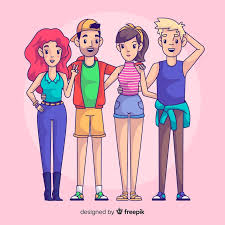

La violencia escolar en los adolescentes.
Puede influir directamente en la conducta de los adolescentes dentro del entorno escolar
Se ha demostrado que los jovenes expuestos a violencia en casa o con estres academico tiene
mayor probabilidadreproducir comportamientos agresivos o mas vunerables a sufrir acoso escolar pueden incluir:
Tipos de violencia Violencia verbal Psicologica Social Fisica Acoso
La violencia entre adolescentes en las escuelas de media superior representa un problema urgente
y complejo que afecta directamente el bienestar emocional,social,(su entorno)y academico de los
de los estudiantes de media superior. Durante esta etapa del desarollo, los jovenes atraviesan
importantes transformaciones fisicas y emocionales, y es tambien un periodo donde se consolidan sus
identidades, valores y relaciones interpersonales. En este contexto, la violencia no solo se manifiesta
a atraves de agresion fisica,si no tambien en formas mas sutiles pero igualmente dañinas, como el acoso
verbal, la exclusion social o la violencia digital. Las concecuencias no se limitan a quienes participan
directamente en los actos violentos;afectan el clima escolar general,deterioran la convivencia y generan,
un ambiente de inseguridad que impide el aprendisaje.Por ello, comprender,visibilizar,y atender esta problematica
desde una perspectiva integral es esencial para garantizar el desarollo saludable de los adolescentes y para
promover espacios educativos que favorezcan la equidad, el respeto y la paz.
El rendimiento academico de los estudiantes.
En los ultimos años, la violencia escolar se ha convertido en una preocupaciÓn creciente en el nivel medio
superior. A pesar de las estrategias implementadas por las instituciiones, los efectos de estas conductas violentas
siguen afectando la vida escolar de los adolescentes especialmente en su rendimiento academico. Es necesario comprender cÓmo
la violencia dentro del entorno educativo incude en los resultados escolares de los jovenes, particularmente en una tan sensible como la adolescencia. Esto se debe a que la violencia escolar afecta directamente el desempeño educativo
de los adolescentes. En nuestros estudios realizados por nuestro equipo analizamos que:Cuando
un estudiante es victima o incluso testigo constante de actos violentos dentro del entorno escolar,su capacidad de concentracion
motivacion y permanencia en clases puede verse gravemente alterada en algunas ocasiones no concluir el nivel medio superior
La ansiedad, el miedo o el estres provocados por situaciones de acoso o agresion pueden llevar a una disminucion en la participacion
En este sentido,el rendimiento academico se convierte en una consecuencia observable y medible del fenomeno
de la violencia escolar,la cual actua como varuiable independiente.
| POBLACION | MUESTRA |
|---|---|
| Estudiantes de nivel medio superior |
Estudiantes de 15 a 17 años seleccionados mediante muestreo grupos de primer semestre a sexto semestre. |